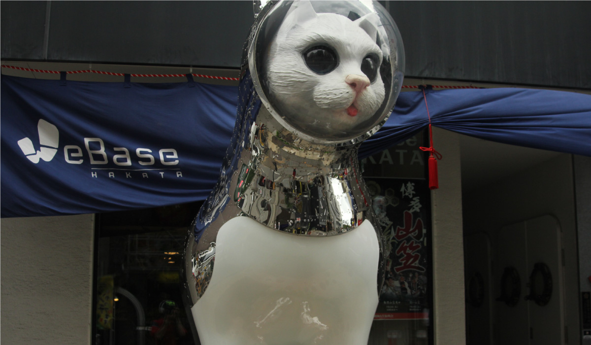
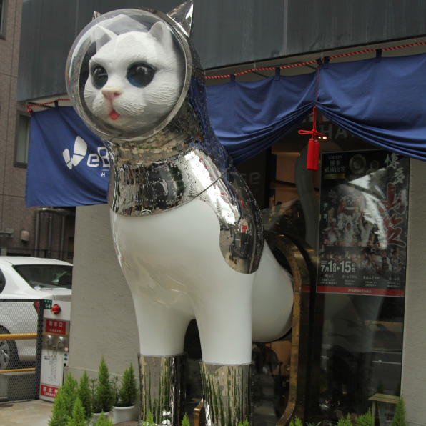
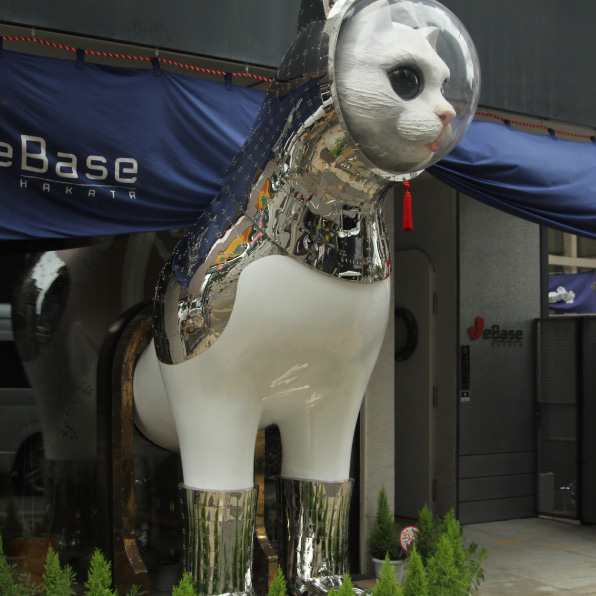

ヤノベケンジ
 
現代美術作家ヤノベケンジ氏は日本の漫画やアニメ、特撮映画などからインスピレーション
を受け、そのエッセンスを現代美術に取り入れた作品を制作している。彼の作品は未来的、
宇宙的な印象を受けるが、昭和時代のおもちゃのような印象も感じられ、どこかノスタルジッ
クな作品たちが多い。福岡で見られる彼の作品『SHIP'sCAT』は「船乗り猫」をモチーフに
彼が制作している作品シリーズの一つ。宇宙服のような装いをした巨大な白猫は、博多の古い
街並みの中で突如として現れ、異質な空間を生み出している。この猫は半身を建物から出し、
建物に入ってくる人の招き猫の役目を果たしつつ、目の前の道路を行き来する街の人々を見守っ
ている。まるでゴシック期のフランス建築物に見られるガーゴイルのように感じられる作品だ。